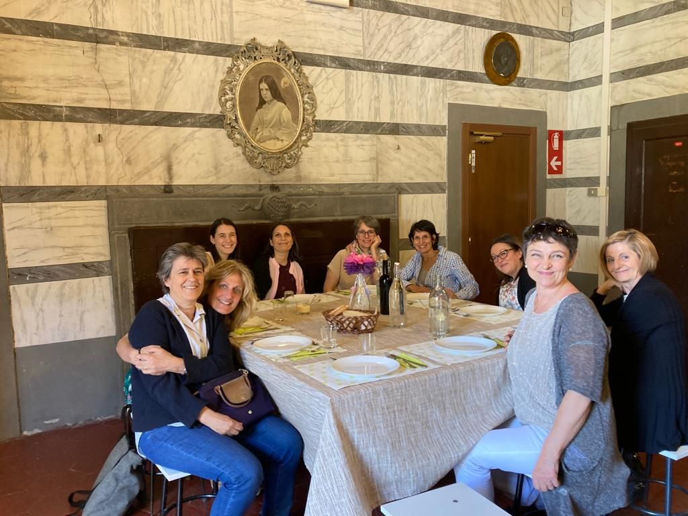
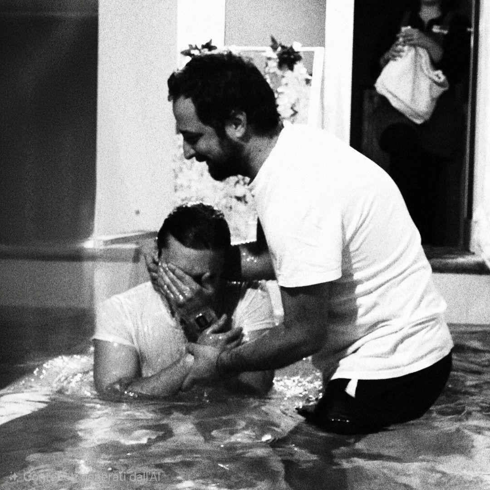
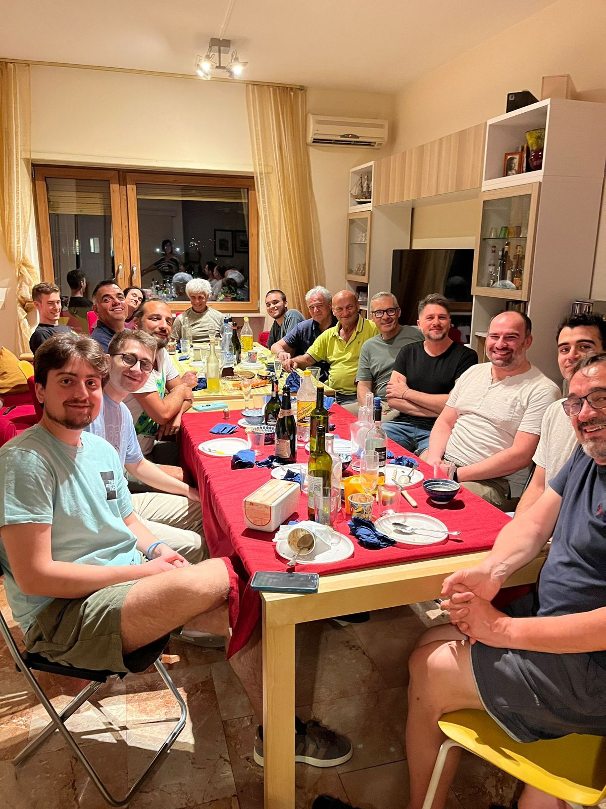
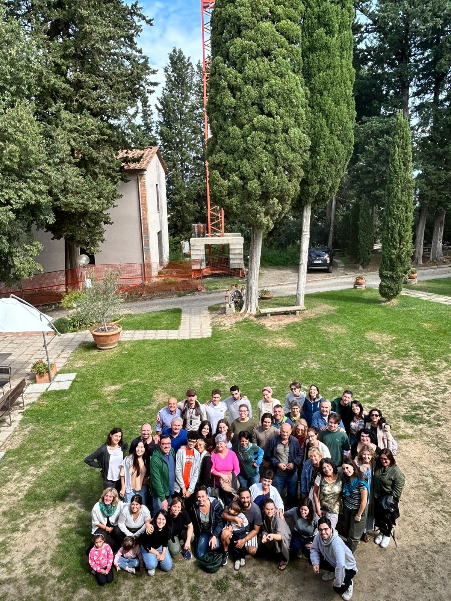

TuttiVita cristianaChiesaPreghieraFamigliaDomande sulla fede

Vita cristiana · In evidenza
Come leggere la Bibbia in un anno senza arrendersi a febbraio
Il piano di lettura del devozionale accompagna ogni giorno chi vuole leggere tutta la Scrittura. Qualche consiglio pratico per non perdere il ritmo, da soli o in famiglia.

Perché la fede ha bisogno di una chiesa locale

Pregare con i Salmi quando mancano le parole

Perché battezziamo per immersione

Dieci minuti di culto in famiglia, anche con bambini piccoli

Tre domande da farsi dopo la predica della domenica
